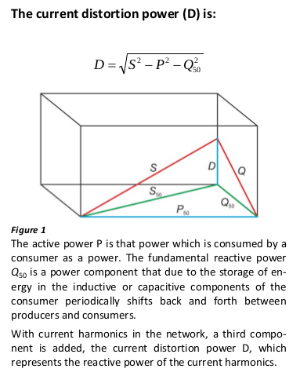

Hello all
I am planning to use an EmonTx V3, a Raspi with RFM69CW, the EmonHub and push data to Emoncms.org.
For my 3-phase system, I would like to display on Emoncms the following parameters:
reactivePower, reactivePower1, reactivePower2, reactivePower3, apparentPower, powerFactor, Irms and the other values that are already calculated in the below sketch.
From sketch "emonTxV3_4_3Phase_Voltage.ino", I should have everything I need (if I am not mistaken) to calculate the above values.
My question: Where should I do the math? In the Arduino sketch and then update the PayloadTx, on the Raspi (where?) or on Emoncms?
I have checked the different functions available on Emoncms and I think I would need the square root which is not available.
What would you suggest?
Thanks for your help.
By the way, this OpenEnergyMonitor project is fantastic.
Walter
Re: 3-phase system: need to calculate/display more parameters
I think the natural place to do that will be in the emonTx, but you have a problem if you want the quadrature component of current in order to get vars - you won't know the sign (inductive/capacitive) from the data available. The only way I think to resolve that would be to calculate vars directly by generating (using the array of stored values) a set of quadrature voltage waves that are shifted 90 ° from the true voltage waves.
And I think you may have a bigger problem. There is already a suspected problem in that sketch with data corruption due to lack of memory, so it might not be possible to include the extra code that you will require.
Re: 3-phase system: need to calculate/display more parameters
Ok, thanks for your quick answer. As first step, I will assume the reactive power is inductive in each phase. Then, I am going to write down the formulas in the sketch, compile and see the results.
I am still waiting for the hardware to come from the shop. So, until there, I can't test anything.
Walter
Re: 3-phase system: need to calculate/display more parameters
Remember also there's Reactive power, and there's Reactive power. The IEEE definition of Reactive power is:
If you've got a modern digital revenue meter that displays Real and Reactive power, it will most likely use that IEEE definition for Reactive power. In the IEEE world, there are three orthogonal components that make up Apparent power: (Real, Reactive, Distortion).
A common (and much easier to calculate) definition of Reactive power is:
Reactive power = (Apparent2 - Real2)1/2
Leaving aside for a moment Robert's point that you need to do further work to determine the sign, those two definitions only produce the same result when there are no harmonics present, i.e. both V and I are sinusoidal. In that rare case, the IEEE Distortion component is zero and so their 3-dimensional model collapses down into 2-dimensions.
A simplification to the IEEE definition to help you get your head around it, is to assume for a moment that your V is a perfect sine wave. In that case all the terms bar the first in that sum disappear because Vn = 0 where n > 1. In that case:
Reactive power = V * I50 * sin(Ø50) (i.e. n=1, and showing the frequency rather than the harmonic number)
So Reactive power is then calculated on just the 50Hz component of the I signal. All the remaining harmonic components of the I signal are booked to Distortion power (because there is no corresponding component in V to get them included in the Reactive power definition). Only the 50Hz stuff can have a sign (i.e. be leading or lagging V) because it's the only component that has a V to compare against.
To the extent that your V signal does have some harmonics, then some of that Distortion power will get dragged back into the Reactive column (complete with sign), but by and large the I signal is way more distorted than the V signal.
As an example, in my house where I have a fairly pure V signal, and lots of I distortion due to all the SMPSs, I see a much larger Distortion component than I do Reactive component:
If I calculated Reactive power via the second formula above, I'd get:
(2512 * 0.672 - 1262)1/2 = 111.4 VAR
but using the first formula I get 13.8 VAR (almost all of that "missing" apparent power has been booked to Distortion).
Arguably, the bigger number is more useful because it reflects the total I load you're putting on the network. It's only relatively recently (with the large scale availability of DSPs) that meters are measuring the Reactive power as defined by the IEEE (the much smaller number in that example). It's potentially even up to individual energy providers as to which definition they prefer.
Here's another way to visualise it. These guys are assuming no harmonics in V, and use S for apparent power:
